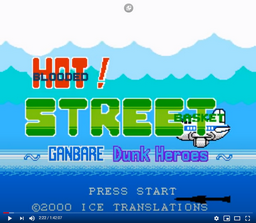
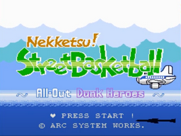
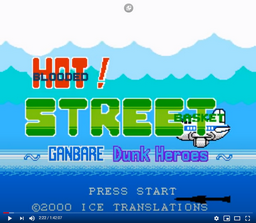
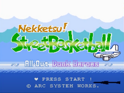
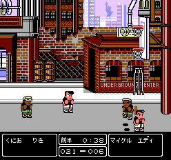

********************************************************************************************
April 17, 1987
Nekketsu Renegade Kunio-kun
Nekketsu Kouha - Kunio Kun
Renegade
_001.png)
_002.png)
 [!]_001.png)
 [!]_002.png)
128k PRG / 0k CHR V UNROM (2)
********************************************************************************************
1987
Super Dodge Ball
Nekketsu Kōkō Dodgeball Bu
熱血高校ドッジボール部, Nekketsu Kōkō Dojjibōru Bu, lit. Hot-Blooded High School Dodgeball Club
_001.png)
_002.png)
_003.png)
 [!]_001.png)
 [!]_002.png)
********************************************************************************************
April 25, 1989
Downtown Nekketsu Story
Downtown Nekketsu Monogatari
River City Ransom
ダウンタウン熱血物語 Tale of Downtown Nekketsu
_001.png)
_003.png)
_004.png)
_006.png)
 [!]_001.png)
 [!]_002.png)
Pussy City Pimps (River City Ransom Hack)
128k PRG / 128k CHR V MMC3 (4)
********************************************************************************************
May 18, 1990
Nekketsu Koukou Dodgeball
Nekketsu High School Dodgeball Club: Soccer Story
熱血高校ドッジボール部サッカー編, Nekketsu Kōkō Dodgeball Bu: Soccer Hen

 [T+Rus]_001.png)


_001.png)
_001-.png)
_002.png)
128k PRG / 128k CHR H MMC1 (1)
********************************************************************************************
October 12, 1990
Downtown Nekketsu March: Super Awesome Field Day
Downtown - Nekketsu Koushin Kyoku - Soreyuke Daiundoukai
ダウンタウン熱血行進曲 それゆけ大運動会 Downtown Nekketsu Kōshinkyoku: Soreyuke Daiundōkai
_002.png)
_003.png)
_004.png)
_005.png)
 [T+Rus Kinbeas (20.03.2016)].png)
128k PRG / 128k CHR H MMC3 (4)
********************************************************************************************
July 26, 1991
Downtown Nekketsu Jidaigekidayo
Downtown Special - Kunio-kun no Jidaigeki Dayo Zenin Shuugou!
Downtown Special: Kunio-kun's Historical Period Drama!
ダウンタウンスペシャルくにおくんの時代劇だよ全員集合！ Downtown Special: Kunio-kun no Jidaigeki da yo Zen'in Shūgō!
_001.png)
_004.png)
_002.png)
_003.png)
128k PRG / 128k CHR H MMC3 (4)
********************************************************************************************
February 7, 1992
Ike Ike Nekketsu Hockey
Go Go! Nekketsu Hockey Club: Slip and Slide Madness
Ike Ike! Nekketsu Hockey Bu - Subette Koronde Dai Rantou
いけいけ！熱血ホッケー部「すべってころんで大乱闘
_001.png)
_002.png)
 [T+Rus]_001.png)
_003.png)
_004.png)
128k PRG / 128k CHR H MMC3 (4)
********************************************************************************************
June 26, 1992
Surprise! Nekketsu New Records! The Distant Gold Medal
Crash 'n' the Boys: Street Challenge
Bikkuri Nekketsu Shin Kiroku! Harukanaru Kin Medal
The Astonishing New Records of Nekketsu! Distant Gold Medal
びっくり熱血新記録！はるかなる金メダル
_002.png)
 [!]_001.png)
_003.png)
_004.png)
_005.png)
_006.png)
_008.png)
Crash N' The Boys 128k PRG / 128k CHR H MMC3 (4)
********************************************************************************************
December 23, 1992
Nekketsu Fighting Legend
Hot Blooded Fighting Legend
熱血格闘伝説 Nekketsu Kakutō Densetsu
_001.png)

 [o1]_001.png)
 [T+Eng.95_oRdErEDchaos][o2]_001.png)
 [T+Spa099_butz]_001.png)
 [T+Kor_hyw793]_001.png)
_002.png)
_003.png)
_005.png)
128k PRG / 128k CHR V MMC3 (4)
********************************************************************************************
April 23, 1993
Kunio-kun's Nekketsu Soccer League
くにおくんの熱血サッカーリーグ
 [!]_001.png)
_001.png)
_003.png)
_001-.png)
_002.png)
 [T+Rus]_001.png)
 [T+Chi]_001.png)
 [T+Spa]_001.png)
(Nekketsu Koukou Soccer 128k PRG / 128k CHR V MMC3 (4) )
********************************************************************************************
December 17, 1993
Nekketsu! Street Basketball: All Out Dunk Heroes
熱血！すとりーとバスケット ～がんばれＤｕｎｋＨｅｒｏｅｓ～ Nekketsu! Street Basket: Ganbare Dunk Heroes
_001.png)
_003.png)
_002.png)
 



 [T+Rus]_001.png)

https://en.wikipedia.org/wiki/Kunio-kun